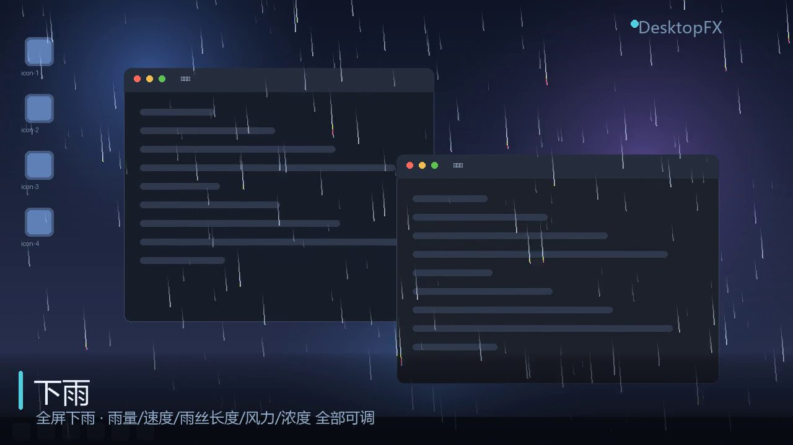
全屏特效下雨
三层景深，雨丝随速度拉长，落地溅起水花。风偏、雨量、浓度都能实时调。
纯 Python 写的桌面特效程序。下雨、下雪、落樱、流星雨覆盖整块屏幕（含多显示器）， 聚光灯、颜料盘、真实水波、宠物跟随跟着鼠标走， 点击表情、点击文字、点击音效在光标处炸开。 覆盖层鼠标事件完全穿透，不拦截任何一次点击。
▸
这段视频里的每一帧，都是用 DesktopFX 自己的渲染引擎离线跑出来的
—— 与你桌面上跑的是同一份代码、同一份参数，不是另做的演示动画。
画面里的光标会真的移动、真的按下：
聚光灯跟着光标亮、颜料被它搅动、小猫沿它划过的路线跟上来、爱心在它点下的位置炸开。
不是「全都能同时开」—— 同类的默认互斥，新开一个会自动关掉另一个。 需要雨雪同屏时，在设置里打开「允许多开」。 上半段是氛围特效（自己布满屏幕），下半段要靠鼠标带出来。

全屏特效三层景深，雨丝随速度拉长，落地溅起水花。风偏、雨量、浓度都能实时调。
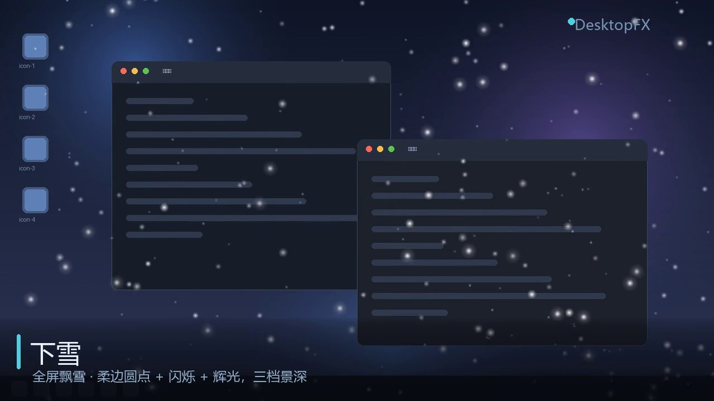
全屏特效按深度分三档近大远小，远雪压住近雪（画家算法）。逐粒子亮度脉动，近雪带辉光，另有独立风速与双正弦阵风。
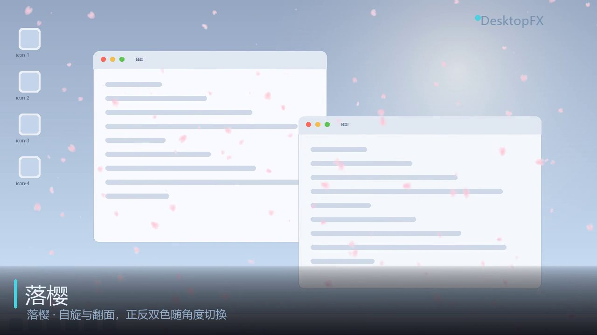
全屏特效花瓣按「主体 → 边缘泛白」双色渐变，带自旋与翻面 —— 翻到侧立时面积收扁、颜色偏白。
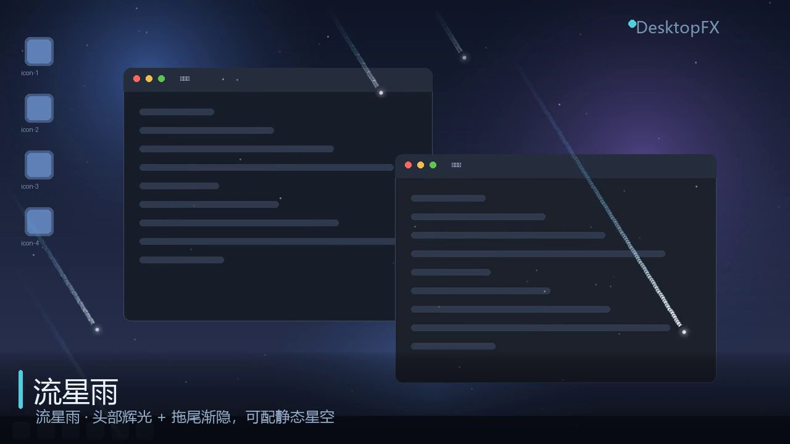
全屏特效斜向高速掠过的彗星。轨迹按间距采样成一串圆盘盖章，尾部不会串成珠子，可叠加一层星空。
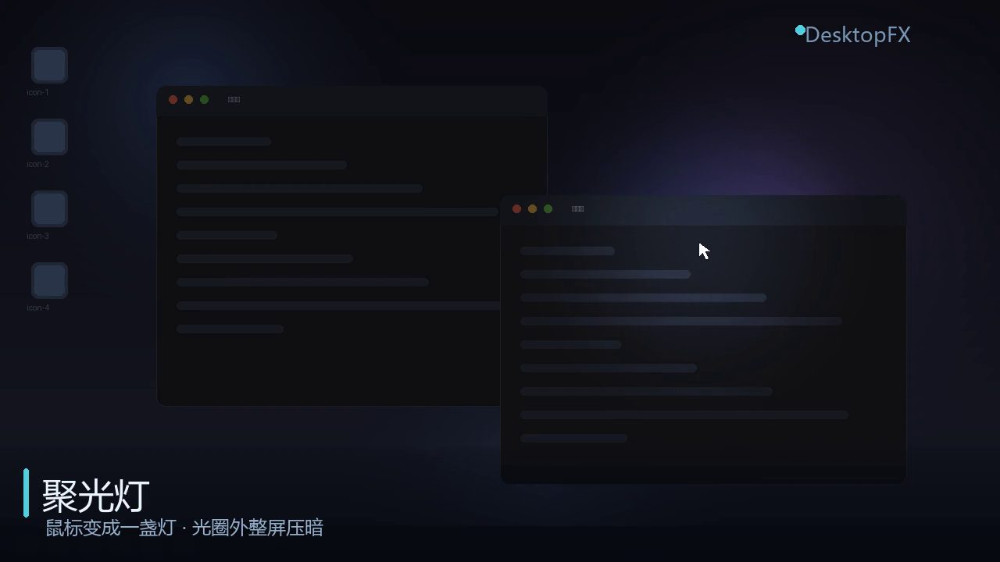
鼠标拖动特效鼠标变成一盏灯：光圈里是亮的，光圈外整屏压暗，把注意力锁在光标周围。
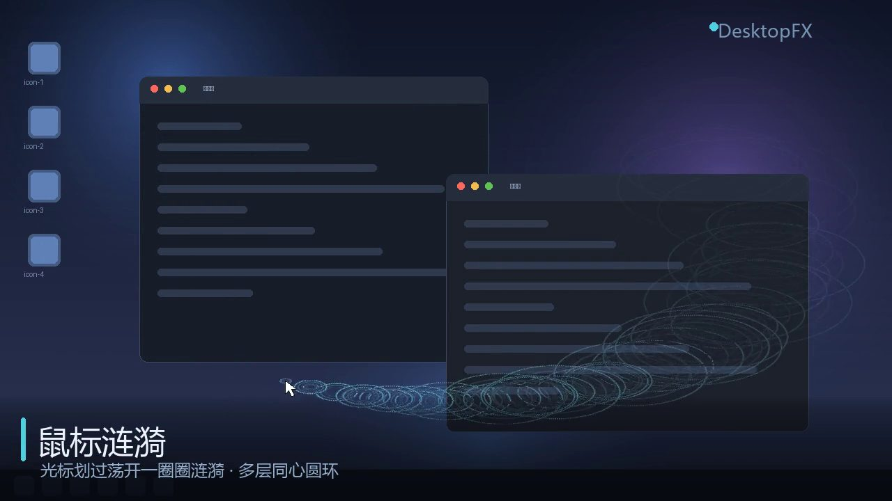
鼠标拖动特效光标划过荡开一圈圈涟漪，多层同心圆环 + 真实 alpha 衰减，越远越淡。
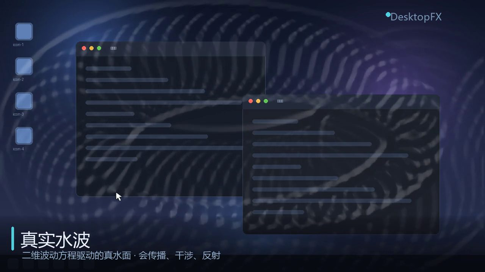
鼠标拖动特效把桌面当成一片水。波会向外传播、相互干涉、撞到边缘反射 —— 这是真的波动方程。
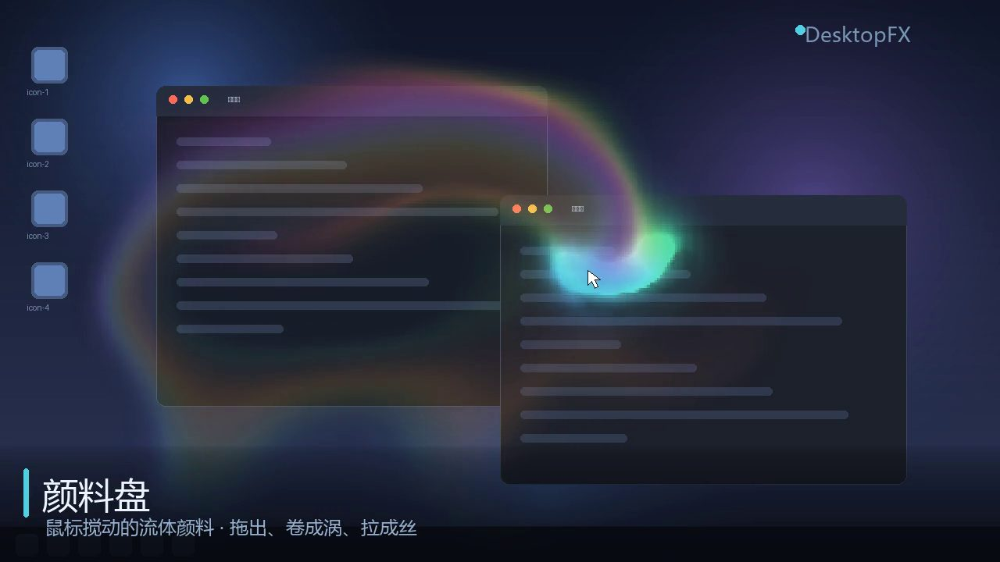
鼠标特效鼠标搅动的流体颜料。笔触被拖出、卷成涡、拉成丝，停手后继续涡旋再慢慢消隐。
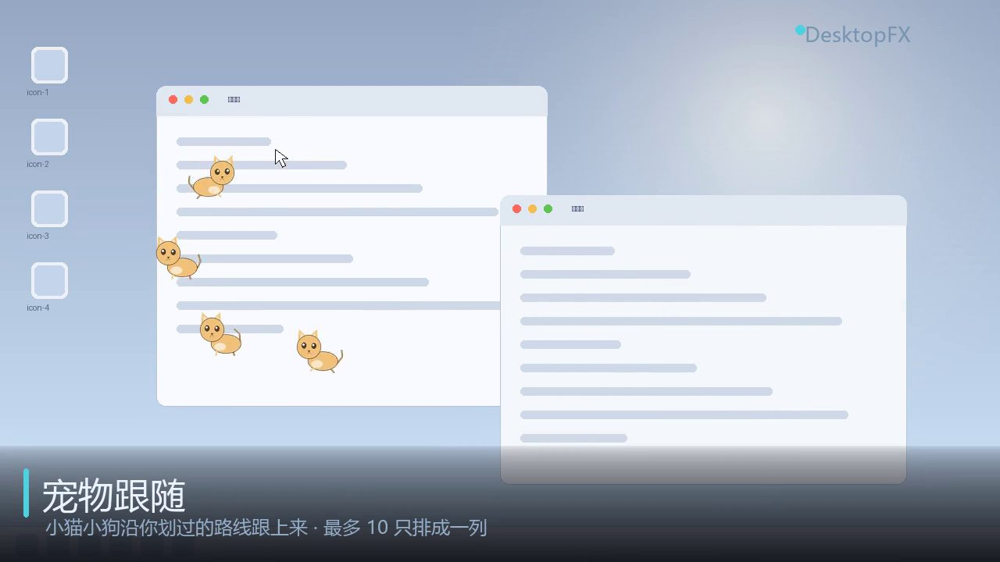
鼠标特效小猫小狗沿你划过的路线一路跟上来，最多 10 只排成一列。形象由代码绘制，不依赖任何图片。
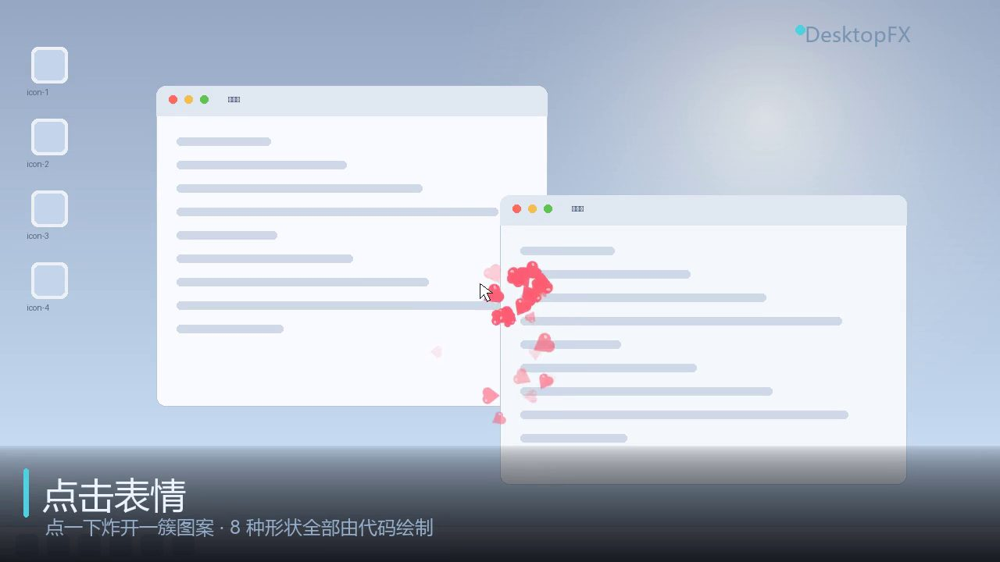
点击特效点一下炸开一簇图案。8 种形状全部由代码画出，支持自定义表情包，GIF 会动起来。
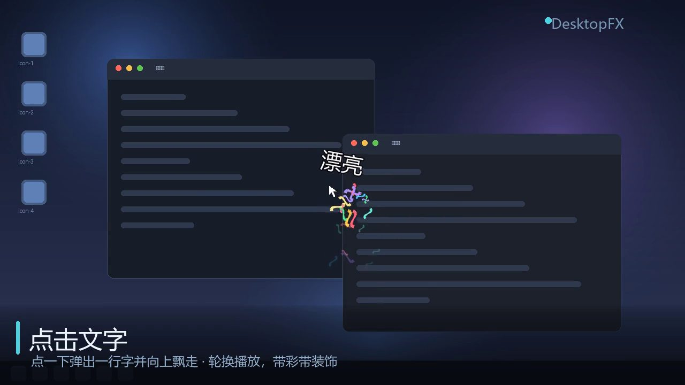
鼠标点击特效点一下弹出文字并向上飘走。多行内容轮换播放，每次随机歪一点，可挂彩带或星光。
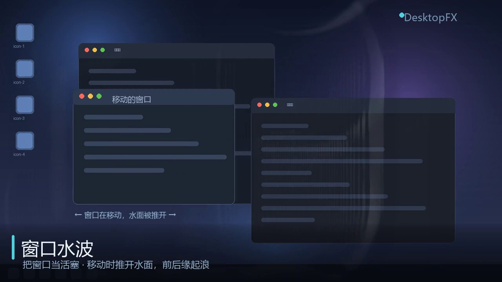
其他特效把桌面上的窗口当成水面上的活塞：移动时前缘推水、后缘留空腔，静止的窗口零注入。
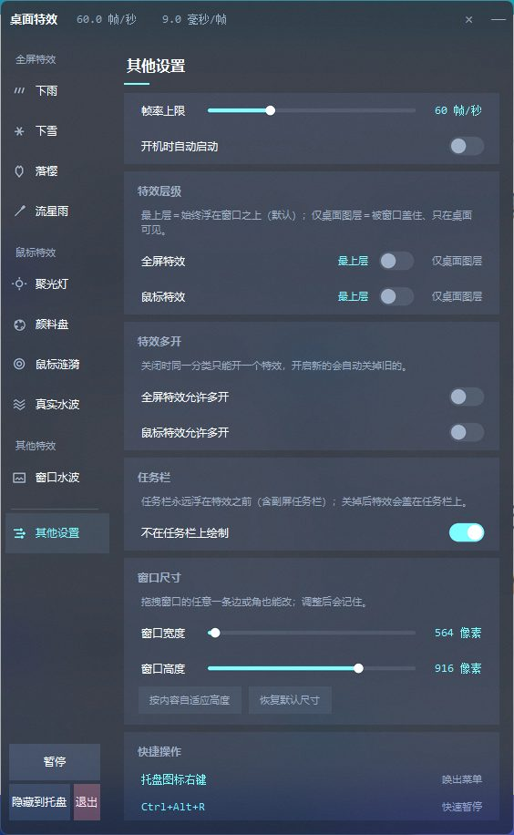
鼠标点击音效点一下鼠标就响一声，不画任何像素。内置音效 / 单个音效 / 音效文件夹随机三档来源，勾上「键盘点击也触发」后打字也会响。
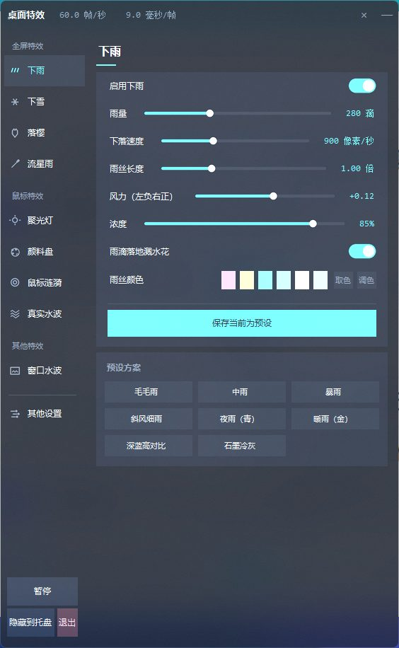
控制面板侧栏按五类分组，每个参数拖一下立刻生效。调好存成预设，一键切回。
面板是自绘控件（Canvas + 抗锯齿），所有参数拖动即时生效 —— 不需要重启，也不需要切回桌面去看效果。
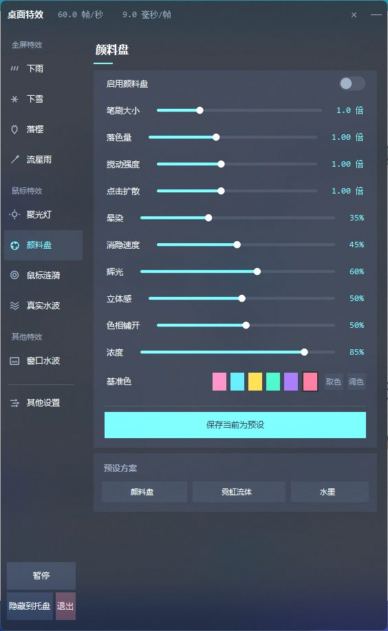
下面每一条都是真的踩过坑之后才写成现在这样的。
用 WS_EX_LAYERED | WS_EX_TRANSPARENT | WS_EX_TOPMOST 建一个覆盖
SM_CXVIRTUALSCREEN × SM_CYVIRTUALSCREEN 的窗，鼠标事件由
WS_EX_TRANSPARENT 完全穿透。像素走 UpdateLayeredWindow +
预乘 alpha，不需要任何 GUI 框架 —— 所以不装 PyQt / wxPython / WPF，机器上只多 numpy 和 Pillow。
高度场 + 速度场双缓冲，g += (avg4(h) − h)·K; g *= damp; h += g。
波会向外传播、相互干涉、撞到屏幕边缘反射 —— 一次点击的涟漪要好几秒才传遍屏幕。
透明层拿不到桌面像素做折射，所以把波面坡度当法线，按固定光向做迎光提亮 / 背光压暗，对任何底色都成立。
窗口自己不画一个像素，只往与「真实水波」共用的那片水面注入位移。移动时前缘推水、后缘留空腔； 最小化是水从四周合拢填掉它。静止的窗口绝对零注入 —— 泡着不动的石头不搅水。
而是按间距采样成一串同半径圆盘，一次性向量化盖章。圆盘核内留一段平坦区， 否则相邻圆盘的中点亮度只有一半，彗尾会串成珠子。燃尽距离由屏幕几何决定， 所以超高屏上不会出现「只有上半屏有流星」。
每帧检查是否被第三方置顶窗（全屏视频 / 画中画 / 远控全屏）盖住。 判据要求「可见 且 长宽 ≥ 32px 且类名不在 shell 黑名单」， 再加两道闸门：链签名短路（只读最近 4 个窗口的 hwnd，约 0.7µs）与抢顶限流（两次至少隔 0.1s）。
把每块屏的任务栏矩形从两层缓冲里擦掉，任务栏于是永远干净 —— 观感上等于任务栏浮在特效之前。任务栏放上/下/左/右都成立，自动隐藏时系统把它挪到屏幕外，矩形自然不相交。
Releases 里拿打包好的 exe，或 clone 源码自己跑。
双击即用。首次运行自动建 venv 并从清华镜像装依赖，之后全程离线。
侧栏按五类分组，点「下雨」就能开。所有参数实时生效，改一下立刻能看到。
调好一套点「保存当前为预设」，随时一键切回。托盘常驻，不挡你干活。
Windows 10 / 11，MIT 协议，随意用、随意改。
纯 Python · ctypes + numpy · 无 GUI 框架